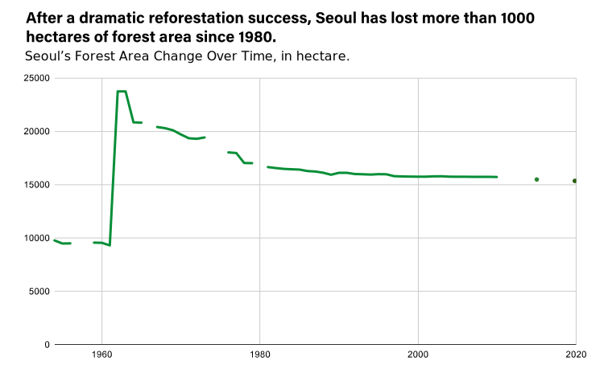

Background
Two-thirds (65%) of all South Korea’s land area is covered by forests.
A quarter of Seoul’s land is covered by forests.
Forested mountains play a big part in a Seoulite’s life. Hiking constantly reaches the top of people’s favorite sports and many form communities around experiencing mountains.
There is even a word that describes people’s neighborhood forest (뒷산), which literally translates to "forest behind the house.” It shows the familiarity and ubiquity of forests in people’s lives.
Story
From 1989, when the official records began, to 2020, Seoul has lost more than 600 hectares of forests. This is twice the size of Central Park.
The story will try to explore the issue of disappearing forests.
What is happening to Seoul's forests? Is it forest fires, or new developments?
How do people feel about this, or do they even know how much of forested lands are disappearing?
What kinds of benefits do the forests bring to the city? (Air pollution, health and exercise, community-building, and more)
Overall, I envision the project to be a personal yet data-driven reporting, highlighting the cultural importance of forests and what the loss of these green spaces means for people.
Data
The historical forest area statistics of Seoul from 1989 to 2020, in hectares. Data from Korea Forest Service Statistics (KFSS)
Google Earth satellite images.
Tools
Python, Google Earth Pro, Google Earth Studio, Illustrator
Interview
An official at Korea Forest Service, to ask questions about the dataset.
Professor who specializes in Seoul's forests.
Members of hiking clubs in Korea. (Already conducted)
